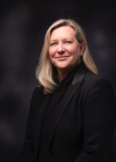
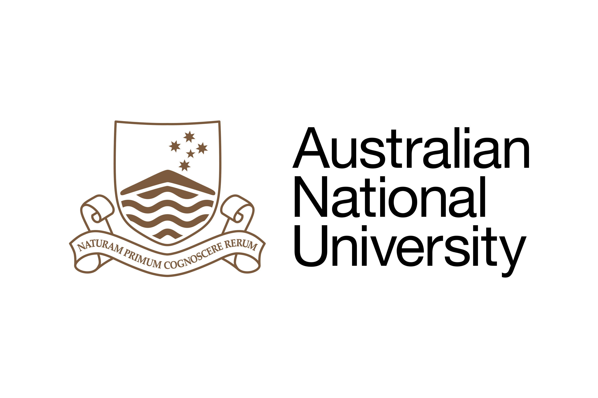

AIMOS Conference 2024
19 to 21 November 2024
ANU, Canberra/Kanbarra
ANU, Canberra/Kanbarra
Photo by Maxwell Ingham on Unsplash.
AIMOS2024 is the sixth annual conference for the Association for Interdisciplinary Metaresearch & Open Science.
The purpose of AIMOS is to make the research process more trustworthy and efficient, and to promote the study of how research is done and how it can be improved. Our annual conference is an important collaborative space that advances this purpose.
AIMOS2024 will bring together researchers from multiple scientific disciplines to talk about how research is done and how we can do it better.
We have three great plenary speakers.
|  | ||
| Barbara O'Brien | James Wilsdon | Joan Leach |
| Barbara O'Brien is a professor at the Michigan State University College of Law, where she teaches classes in criminal law and procedure. Barbara is the editor of the National Registry of Exonerations, a groundbreaking advance for studying the contributors to wrongful convictions. | James Wilsdon was one of the founders of the Research on Research Institute (RoRi) and has been its director since 2019. James has advanced concepts such as upstream public engagement, science diplomacy, responsible metrics, and responsible research assessment. | Joan Leach is the Director of the Australian National Centre for Public Awareness of Science at the ANU. Her research and teaching centres on theories of the public in science communication, language and rhetoric in science, and the challenge of ethics in science communication. |

|

|

|

|

|

|
|
| Adrian Barnett | Jason Chin | Kylie Hunter | Aidan Tan | Tatiana Chakravorti |
Iván Pérez-Neri | Samiul Hossain |
|
|
 |
Sign up here to the AIMOS mailing list to get updates on the conference and other meta-research events.
Got a question about the conference? Email Adrian at: a.barnett@qut.edu.au.
Want to know more about AIMOS? Here's our web page.